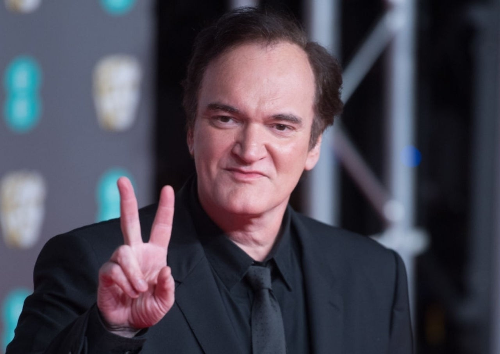

Quentin Tarantino, in full Quentin Jerome Tarantino, (born March 27, 1963, Knoxville, Tennessee, U.S.), American director and screenwriter whose films are noted for their stylized violence, razor-sharp dialogue, and fascination with film and pop culture.
He is of Italian-Irish-Cherokee ancestry. He was raised by his mother and stepfather, Curt Zastoupil. He studied at Fleming Junior High School, where he took up drama classes and also studied at Narbonne High School, before he dropped out at the age of 15.After he quit school, he attended James Best Theater Company but left it after two years.
Tarantino worked in a video store in California before selling two screenplays that became True Romance (1993) and Oliver Stone’s Natural Born Killers (1994). In 1992 he made his directing debut with Reservoir Dogs, a violent film about a failed jewelry store robbery. Two years later he established himself as a leading director with Pulp Fiction. The provocative film, which featured intersecting crime stories, won the Palme d’Or at the Cannes film festival, and Tarantino later received (with Roger Avary) an Academy Award for best original screenplay. For Jackie Brown (1997), he adapted an Elmore Leonard novel about a flight attendant entangled in criminal activities.
In Tarantino’s past 26 years of filmmaking, he has written 16 films and directed nine. Reservoir Dogs (1992), True Romance (1993), and Pulp Fiction (1994) are Tarantino’s earliest films and his most famous. Sub genres of films such as Spaghetti Westerns, Blaxploitation, and Poliziotteschi were popular during Tarantino’s adolescence, and can be seen in the directors’ early films, which likewise hold the cinematic motifs that would come to dominate his entire output.